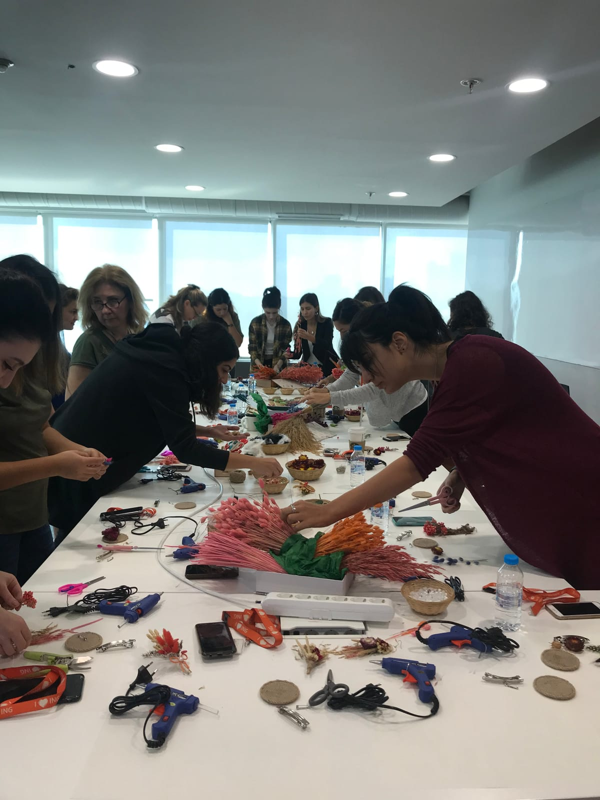
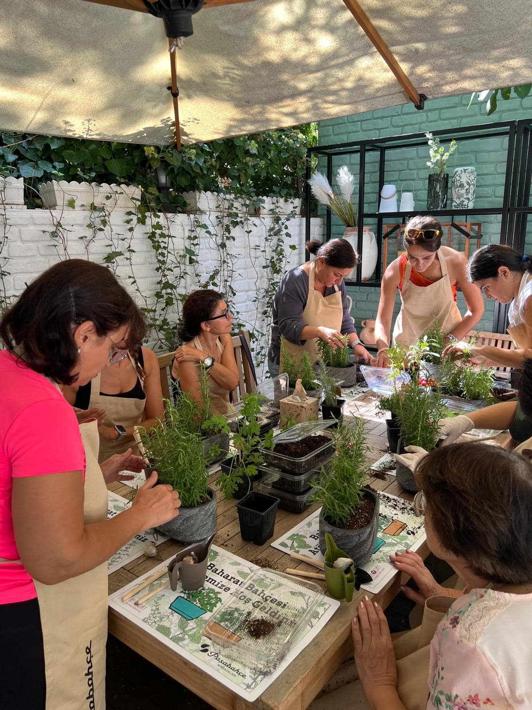

Afloday Kurumsal Hizmetler7 kategori · 53 atölye
Doğadan Etkinlik Atölye Deneyimleri.
İnsan ile doğa arasındaki bağı yeniden güçlendirmek için doğadan ilham alan, doğal malzemelerle tasarlanmış deneyimler geliştiriyoruz. Katılımcıları yalnızca üretmeye değil; doğayı hissetmeye, onunla yeniden bağ kurmaya ve bu bağı yaşamlarının bir parçası hâline getirmeye davet ediyoruz. Kendi elleriyle ürettikleri tasarımları çalışma ve yaşam alanlarına taşıyan katılımcılar, doğayı günlük yaşamlarının içine dahil ederken, bu deneyim birçok kişi için kalıcı ve sürdürülebilir bir hobiye dönüşüyor.
Doğanın iyileştirici gücü ve birlikte üretmenin mutluluğunu bir araya getiren etkinliklerimiz; motivasyonu, ekip bağlarını ve çalışan deneyimini güçlendiriyor. Kurumun hedeflerine, mevsime ve etkinlik temasına göre özelleştirilebilen içeriklerimiz; ürün lansmanlarından iç iletişim projelerine kadar marka hikâyelerini katılımcının aktif olarak deneyimlediği unutulmaz deneyimlere dönüştürüyor.
Etkinlik kategorileri
Doğadan Etkinlik Atölye Deneyimleri
Sürdürülebilirliği anlatmak yerine deneyimleten bu atölyeler, çalışanları doğanın döngüsünü keşfetmeye ve kaynaklara farklı bir gözle bakmaya davet eder. İleri dönüşüm, biyolojik çeşitlilik ve bilinçli tüketim temalarını yaratıcı üretim süreçleriyle buluşturarak çevresel farkındalığı kurum kültürünün bir parçası hâline getirir.

-
01
Sürdürülebilir Yeşil Dünya Teraryum Atölyesi
Geri dönüştürülebilir malzemelerle oluşturulan mini ekosistemler, doğadaki yaşam döngüsünü yaratıcı bir deneyime dönüştürür. Çalışanlar birlikte üretirken sürdürülebilirlik farkındalığını deneyimler, ekip etkileşimini ve çevresel duyarlılığı güçlendiren kalıcı bir tasarım oluşturur.
-
02
Sukulent Kupa Aranjman Atölyesi
Günlük hayatta farklı amaçlarla kullanılan kupalar, sukulentlerle yeniden hayat bulurken yaratıcı düşünme ve sürdürülebilir tüketim yaklaşımını destekleyen keyifli bir deneyime dönüşür. Çalışanlar birlikte üretirken doğayla bağ kurar, ortaya çıkan tasarımlar ise uzun süre kullanılabilecek doğal bir hatıraya dönüşür.
-
03
Doğanın İkinci Baharı: Kuru Çiçek Aranjman Atölyesi
Doğal yaşam döngüsünü tamamlamış çiçekler, estetik tasarımlara dönüşerek doğanın hiçbir parçasının değerini kaybetmediğini hatırlatır. Çalışanlar üretim sürecinde yaratıcılıklarını ortaya koyarken sürdürülebilir bakış açısını deneyimleme fırsatı bulur.
-
04
Kahve Şişesiyle Bitki Akvaryumu (Herbaryum) Atölyesi
Kullanım ömrünü tamamlamış cam şişeler, bitkilerle yeniden hayat bulurken ileri dönüşümün yaratıcı yönünü görünür kılar. Çalışanlar doğayla bağ kurarken atıkların yeniden değerlendirilebileceğini deneyimleyerek sürdürülebilir yaşam konusunda ilham alır.
-
05
Bitkilerle Pastoral Şamdan Atölyesi
Doğal bitkiler ve organik dokularla hazırlanan dekoratif şamdanlar, doğanın estetik gücünü yaratıcı bir üretim deneyimiyle buluşturur. Çalışanların odaklanmasını ve günlük iş temposundan uzaklaşmasını desteklerken doğal malzemelerin farklı kullanım alanlarını keşfetmelerini sağlar.
-
06
Doğadan İlhamla: Naturalist Şapka Tasarım Atölyesi
Geri dönüştürülmüş kumaşlar ve doğal malzemelerle hazırlanan tasarımlar, sürdürülebilirliği yaratıcı ifade biçimine dönüştürür. Birlikte üretme süreci yaratıcılığı ve ekip etkileşimini desteklerken, çevresel farkındalığı estetik bir deneyimle buluşturur.
-
07
Saksısız Bitki Yetiştirme (Kokedama) Atölyesi
Japon bitki yetiştirme sanatından ilham alan bu deneyim, doğanın sadeliğini ve denge anlayışını çalışanlarla buluşturur. Saksısız tasarım süreci; sabrı, özeni ve doğayla uyumlu yaşam yaklaşımını destekleyen sakinleştirici bir üretim deneyimi sunar.
-
08
Atıktan Yaşama Yeniden Saksı Tasarım Atölyesi
Günlük yaşamda kullanılan objeler yaratıcı dokunuşlarla yeniden işlev kazanırken, ileri dönüşüm uygulamalı bir deneyime dönüşür. Çalışanlar birlikte üretirken atıkların potansiyelini keşfeder, sürdürülebilirlik bilincini somut bir tasarımla pekiştirir.
-
09
Doğadan Çiçekli Sofra Aksesuarları Tasarım Atölyesi
Doğal bitkiler ve kuru çiçeklerle hazırlanan dekoratif servis tasarımları, doğanın estetiğini günlük yaşamın bir parçası hâline getirir. Üretim süreci yaratıcılığı ve birlikte üretmenin keyfini desteklerken doğal malzemelerin sürdürülebilir kullanımına ilham verir.
-
10
Arı Bahçesi Tasarım Atölyesi
Arılar için yaşam alanı oluşturan bitkilerle hazırlanan bu atölye, biyolojik çeşitliliğin korunmasına dikkat çeken anlamlı bir deneyim sunar. Çalışanlar birlikte üretirken doğaya somut katkı sağlamanın önemini keşfeder, sürdürülebilirlik bilincini yaşayarak deneyimler.
Sürdürülebilirlik Etkinlikleri · 10 kare
Yoğun iş temposuna keyifli bir ara veren bu doğa temelli deneyimler, çalışanların birlikte üretmesini, günlük rutinden uzaklaşmasını ve doğayla yeniden bağ kurmasını sağlar. Eğlenceli ve yaratıcı içerikleriyle ekip motivasyonunu artırırken, kurum içinde pozitif etkileşim ve iyi oluş kültürünü destekler.

-
01
Doğadan İlhamla Naturel Takı Tasarım Atölyesi
Kuru çiçekler ve doğal malzemelerle hazırlanan özgün tasarımlar, çalışanlara üretmenin keyfini yaşatan eğlenceli bir deneyim sunar. Günlük iş temposuna keyifli bir mola verirken doğayla bağ kurmayı, birlikte üretmeyi ve pozitif ekip etkileşimini destekler.
-
02
Doğadan Mottolu Farkındalık Çerçevesi Atölyesi
Kurumun öncelik verdiği mesajlar, doğadan ilham alan yaratıcı tasarımlarla görünür hâle gelir. Çalışanlar ortak bir tema etrafında üretirken hem keyifli vakit geçirir hem de kurum kültürünü destekleyen mesajları birlikte deneyimleyerek kalıcı bir hatıraya dönüştürür.
-
03
Taze Çiçeklerle Buket Atölyesi
Doğanın renkleri ve kokularıyla buluşan çalışanlar, birlikte tasarladıkları buketlerle keyifli ve dinlendirici bir üretim deneyimi yaşar. Ortaya çıkan tasarımlar motivasyonu artırırken, çalışma ortamına doğanın enerjisini taşır.
-
04
İlham Veren Mini Ekosistem Teraryum Atölyesi
Cam içinde kurulan mini ekosistemler, çalışanlara doğanın dengesini keşfederken üretmenin keyfini yaşatır. Günlük iş temposundan uzaklaştıran bu deneyim, birlikte üretmeyi teşvik eder ve çalışma ortamına uzun süre eşlik edecek doğal bir hatıra bırakır.
-
05
Kuru Çiçek Fanus Tasarım Atölyesi
Kuru çiçeklerle hazırlanan dekoratif fanuslar, çalışanların keyifli bir üretim süreciyle doğanın estetiğini keşfetmesini sağlar. Ortaya çıkan tasarımlar, çalışma alanlarına sıcak bir dokunuş katarken deneyimin uzun süre hatırlanmasını sağlar.
-
06
Mini Bahçe Tasarım Atölyesi
Çalışanlar kendi minyatür bahçelerini tasarlarken doğanın sakinleştirici etkisini deneyimler ve birlikte üretmenin keyfini yaşar. Ortaya çıkan canlı tasarımlar, motivasyonu destekleyen kalıcı bir hatıra olarak çalışma alanlarına taşınır.
-
07
Zarafet Camda: Orkide Bahçesi Tasarım Atölyesi
Orkideler ve doğada birlikte bulundukları özenle seçilmiş bitkilerle hazırlanan bu özel deneyim, çalışanlara doğanın zarafetini estetik bir üretim süreciyle keşfetme fırsatı sunar. Günlük iş temposuna keyifli bir mola veren atölye, çalışma ortamına değer katan şık ve kalıcı tasarımlarla unutulmaz bir deneyime dönüşür.
Motivasyon ve Çalışan Deneyimi Etkinlikleri · 9 kare
Mevsimlerin enerjisini ve özel günlerin anlamını doğadan ilham alan yaratıcı deneyimlerle buluşturarak kurum içinde unutulmaz anılar oluşturur. Birlikte üretmenin ve kutlamanın keyfini yaşatan bu etkinlikler, çalışan etkileşimini, motivasyonu ve aidiyet duygusunu güçlendirirken kurum kültürünü destekler. Özel günleri ve mevsim geçişlerini doğadan ilham alan yaratıcı deneyimlerle kutlayarak kurum içi etkileşimi ve çalışan bağlılığını artırır.

-
01
Bahar Kapı Süsü Tasarım Atölyesi
Baharın renkleri ve doğal malzemeleriyle hazırlanan kapı süsleri, yeni başlangıçların enerjisini çalışma ortamına taşır. Çalışanların birlikte üretip baharın coşkusunu paylaşmasını sağlayan bu deneyim, kurum içinde pozitif etkileşimi ve motivasyonu destekler.
-
02
Çiçekli Cadılar Kulübü: Halloween Cadı Süpürgesi Tasarım Atölyesi
Halloween konseptini doğadan ilham alan yaratıcı tasarımlarla buluşturan bu eğlenceli atölye, çalışanların günlük rutinden uzaklaşarak keyifli vakit geçirmesini sağlar. Ortaya çıkan özgün tasarımlar, kurum içi kutlamalara renk katarken unutulmaz bir ekip deneyimi sunar.
-
03
Çiçek Tablo Tasarım Atölyesi
Doğal çiçeklerle hazırlanan anlamlı tablolar, özel günleri kalıcı bir hatıraya dönüştüren yaratıcı bir deneyim sunar. Kurumun vermek istediği mesaja uygun kurgulanabilen bu atölye, birlikte üretmenin keyfiyle çalışan bağlılığını destekler.
-
04
Yılbaşı Kapı Çelengi Tasarım Atölyesi
Doğal malzemelerle hazırlanan yılbaşı çelenkleri, yeni yıl heyecanını çalışma ortamına taşıyan keyifli bir üretim deneyimi sunar. Birlikte tasarlanan çelenkler, kurum içi kutlamalara sıcak bir atmosfer kazandırırken çalışanlar arasında pozitif etkileşimi artırır.
-
05
Yılbaşı Ağaç Süsü Tasarım Atölyesi
Doğadan ilham alan yılbaşı süsleri tasarlanan bu atölye, yeni yıl ruhunu yaratıcı bir üretim deneyimiyle buluşturur. Çalışanların birlikte eğlenmesini ve keyifli anılar biriktirmesini sağlayan etkinlik, kurum içi motivasyonu destekler.
-
06
Mimoza Toka, Taç Tasarım Atölyesi
Kadınlar Günü’ne özel tasarlanan bu atölye, mimoza çiçeğinin anlamını yaratıcı bir üretim deneyimiyle buluşturur. Çalışanların birlikte üretmesini ve özel günü anlamlı bir anıya dönüştürmesini sağlayarak kurum içindeki kutlama kültürünü güçlendirir.
-
07
Mimoza Ağaç Tasarım Atölyesi
Kadınlar Günü’ne özel hazırlanan bu deneyimde, mimozanın simgesel anlamı doğadan ilham alan özgün tasarımlarla hayat bulur. Birlikte üretmenin keyfini yaşatan atölye, kurumun çalışanlarına verdiği değeri görünür kılan anlamlı bir etkinliğe dönüşür.
-
08
Sevgililer Günü Aşk Bahçesi Atölyesi
Doğanın renkleri ve bitkileriyle hazırlanan mini bahçeler, Sevgililer Günü’nü yaratıcı ve keyifli bir deneyime dönüştürür. Birlikte üretmenin mutluluğunu paylaşan çalışanlar, kurum içinde sıcak ve samimi bir kutlama atmosferi oluşturur.
Özel Gün ve Dönemsel Etkinlikler · 12 kare
Amacı
Doğadan ilham alan takım deneyimleriyle çalışanları ortak bir hedef etrafında buluşturarak iş birliğini, iletişimi ve birlikte üretme kültürünü güçlendirir. Ekiplerin birlikte düşünmesini, karar almasını ve üretmesini sağlayan bu deneyimler, kurum kültürünü destekleyen kalıcı anılar ve güçlü ekip bağları oluşturur.

-
01
Doğadan 5g’ye: Doğal İletişim Nesneleri Tasarım Atölyesi
Doğadaki görünmez iletişim ağlarından ilham alan bu atölye, ekiplerin iletişimi farklı bir bakış açısıyla deneyimlemesini sağlar. Birlikte tasarlanan doğal iletişim nesneleri, ortak düşünmeyi, fikir paylaşımını ve ekip içi etkileşimi destekleyen yaratıcı bir deneyime dönüşür.
-
02
Doğa Hack’i: Geri Dönüşümle Yaratıcılık Atölyesi
Geri dönüştürülmüş malzemeler ve doğal objelerle gerçekleştirilen bu takım deneyimi, ekiplerin birlikte düşünerek üretmesini teşvik eder. Ortak tasarım süreci; yaratıcılığı, problem çözme becerisini ve farklı bakış açılarını bir araya getirirken sürdürülebilirlik konusunda ortak bir farkındalık oluşturur.
-
03
Doğal Harflerden Kelime Tasarım Atölyesi
Takımlar, kurumun adı veya ortak bir mesajı temsil eden harfleri doğal malzemelerle birlikte tasarlar. Her grubun ortaya koyduğu parça, birleşerek tek bir bütün oluşturur; böylece ekipler birlikte üretmenin, ortak hedefe ulaşmanın ve kurum kültürünü birlikte inşa etmenin gücünü deneyimler.
-
04
Doğadan İlhamla Takım Ruhu: Sukulent Bahçesi Atölyesi
Ekipler ortak bir sukulent bahçesi tasarlayarak birlikte planlama, karar alma ve üretme deneyimi yaşar. Doğadan ilham alan bu süreç, iş birliğini güçlendirirken ortak emeğin somut bir ürüne dönüşmesini sağlayan keyifli bir takım deneyimi sunar.
-
05
Tarihten İlhamla Minyatür Bahçeni Tasarımı Atölyesi
Takımlar, canlı bitkilerle ortak bir bahçe tasarlarken doğanın büyüme ve dayanışma döngüsünden ilham alır. Farklı bahçe kültürlerinden ilham alan ekipler, seçtikleri konsepti birlikte planlayıp hayata geçirir. Tasarım süreci; ortak karar almayı, görev paylaşımını ve yaratıcı problem çözmeyi desteklerken ekiplerin birlikte üretme deneyimini güçlendirir.
-
06
Yeni Bir Hayat: Takım Geri Dönüşüm Saksı Tasarım Atölyesi
Takımlar, geri dönüştürülebilir malzemeleri birlikte yeniden tasarlayarak işlevsel bitki düzenlemeleri oluşturur. Ortak üretim süreci, iş birliğini ve yaratıcı düşünmeyi desteklerken sürdürülebilirlik bilincini ekipçe deneyimlenen anlamlı bir başarı hikâyesine dönüştürür.
Takım Gelişim Etkinlikleri · 7 kare
Çalışanları ortak bir sosyal fayda hedefi etrafında buluşturan bu deneyimler, üretmeyi anlamlı bir etkiye dönüştürür. Atölyede tasarlanan ürünlerden biri katılımcıya kurum hediyesi olarak kalırken, diğeri kurumun belirlediği sivil toplum kuruluşu yararına hazırlanır. Katılımcılar bu ürünü yakın çevrelerine, gönüllü olarak tasarladıklarını ve hangi sosyal amaca destek verdiğini anlatarak bağış karşılığında ulaştırır. Elde edilen gelir ilgili sivil toplum kuruluşuna aktarılır. Böylece çalışanlar yalnızca gönüllülüğü deneyimlemekle kalmaz; çevrelerinde farkındalık oluşturarak başkalarını da sosyal faydaya ortak eder ve toplumsal etkinin büyümesine katkı sağlar.
Katılımcılar atölyede ürettikleri ürünleri yalnızca tasarlamaz; aynı zamanda onların sosyal etki elçisine dönüşür. Ürünü yakın çevrelerine ulaştırırken gönüllülük hikâyesini ve desteklenen sivil toplum kuruluşunun amacını paylaşır, bağış yapılmasına aracılık eder.
Böylece tek bir ürün, yeni bağışçılarla buluşarak gönüllülük bilincinin yayılmasına ve sosyal etkinin katlanarak büyümesine katkı sağlar.
Uygulanabilecek Atölyeler
- Kuru Çiçek Toka & Taç Tasarım Atölyesi
- Deniz Konseptli Takı Tasarım Atölyesi
- Saksısız Bitki Yetiştirme (Kokedama) Gönüllülük Atölyesi

Kurumsal Gönüllülük Etkinlikleri · 9 kare
Doğanın bilimsel olarak kanıtlanan iyileştirici etkisini çalışan deneyimine taşıyan bu etkinlikler; yoğun iş temposunda zihnin yavaşlamasına, stresin azalmasına ve odaklanmanın yeniden kazanılmasına destek olur. Araştırmalar, doğayla temasın dikkat süresini artırabildiğini, stres düzeyini azaltabildiğini ve yaratıcı düşünmeyi destekleyebildiğini ortaya koymaktadır. Özellikle Shinrin-yoku (Orman Banyosu) üzerine yapılan çalışmalarda, doğada geçirilen zamanın bağışıklık sistemi üzerinde olumlu etkiler gösterebildiği ve Natural Killer (NK) hücrelerinin aktivitesini artırabildiği raporlanmıştır.
Doğal malzemelerle üretim yapmaya dayalı deneyimlerimiz, çalışanların kısa süreliğine dijital ve zihinsel yoğunluktan uzaklaşmasını sağlayarak daha sakin, odaklı ve üretken bir zihin durumuna geçişini destekler. Böylece yalnızca keyifli bir etkinlik değil, çalışan iyi oluşunu ve verimliliğini destekleyen anlamlı bir deneyim sunar.
Bilim Ne Diyor?
- Doğayla temas stres hormonlarının azalmasına yardımcı olabilir.
- Doğal ortamlar dikkat yenilenmesini ve odaklanmayı destekleyebilir.
- Doğada geçirilen zaman yaratıcılığı ve problem çözme becerilerini olumlu etkileyebilir.
- Shinrin-yoku (Orman Banyosu) araştırmaları, doğayla geçirilen zamanın bağışıklık sistemi üzerinde olumlu etkiler oluşturabildiğini ve NK hücre aktivitesinde artış gözlemlendiğini göstermektedir.
- Çalışan wellbeing programları; motivasyon, bağlılık ve iş performansını destekleyen uygulamalar arasında gösterilmektedir.

-
01
Kokulu Bahçem: Baharatlarla Tasarım Atölyesi
Aromatik bitkilerle hazırlanan bu deneyim, çalışanları doğanın iyileştirici etkisiyle buluştururken günlük yaşamda sürdürülebilir alışkanlıklara ilham verir. Üretim süreci; iyi oluşu, rahatlamayı ve doğayla bağı desteklerken, mutfakta kullanılabilecek yaşayan bir baharat bahçesi oluşturulmasını sağlar.
-
02
Doğadaki Misafirim: Kuş Evi Tasarım Atölyesi
Ahşap kuş evleri tasarlanan bu deneyim, çalışanların doğayla bağ kurmasını ve canlılara katkı sunmanın iyi hissettiren etkisini deneyimlemesini sağlar. Üretim süreci; yaratıcılığı, farkındalığı ve çevresel duyarlılığı desteklerken, doğaya kalıcı bir iz bırakma duygusu kazandırır.
-
03
Dalından Taze Tütsü & Oda Kokusu Tasarım Atölyesi
Doğal aromatik bitkilerle hazırlanan tütsü ve oda kokuları, çalışanlara duyulara hitap eden sakinleştirici bir üretim deneyimi sunar. Doğanın kokularıyla geçirilen bu süreç, stresin azalmasına, anda kalmaya ve yaşam alanlarına doğal bir ferahlık taşınmasına katkı sağlar.
-
04
Bitkilerle Arınma: Aromatik Duş Buketleri Atölyesi
Aromatik bitkilerden hazırlanan duş buketleri, günlük bakım rutinlerini doğanın iyileştirici etkisiyle buluşturur. Üretim süreci, çalışanların kendilerine zaman ayırmasını teşvik ederken iyi oluşu ve duyusal farkındalığı destekleyen keyifli bir deneyim sunar.
-
05
Sakinlikte Estetik: Taze Çiçeklerle İkebana Tasarım Deneyimi
Japon çiçek düzenleme sanatı Ikebana’dan ilham alan bu deneyim, sadelik, denge ve anda kalma pratiğini yaratıcı üretimle birleştirir. Çalışanların odaklanmasını, zihinsel dinginlik kazanmasını ve estetik bakış açısını geliştirmesini destekler.
-
06
Bonsai Ağaç Tasarım Atölyesi
Bonsai sanatının sabır ve özen gerektiren yaklaşımını deneyimleyen çalışanlar, doğanın ritmiyle uyumlanırken odaklanma ve farkındalık becerilerini geliştirir. Üretim süreci, zihinsel rahatlamayı destekleyen kalıcı bir doğa deneyimi sunar.
-
07
Orman Banyosu (Shirin Yoku) Atölyesi
Bilimsel araştırmalarla da desteklenen orman banyosu deneyimi, çalışanların doğayla bilinçli bağ kurmasını sağlayarak stres düzeyini azaltmayı ve zihinsel yenilenmeyi destekler. Kurumlara, çalışan iyi oluşunu güçlendiren sakin, farkındalık odaklı bir deneyim sunar.
-
08
Bonsai Müzesi Ziyareti & Bonsai Tasarım Atölyesi
Doğanın estetik anlayışını ve bonsai kültürünü keşfetmeyi üretim deneyimiyle birleştiren bu özel etkinlik, çalışanların ilham almasını ve zihinsel olarak yenilenmesini sağlar. Kültürel keşif ve yaratıcı uygulama bir araya gelerek unutulmaz bir wellbeing deneyimi oluşturur.
-
09
Şifa Bahçesi Tasarım Atölyesi
Doğanın denge ve dinginlik hissinden ilham alan bu deneyimde, çalışanlar sukulentler, doğal taşlar, yosun ve farklı doğal dokularla kendi şifa bahçelerini tasarlar. Farklı kültürlerde yüzyıllardır denge, güç ve iyi oluşun sembolü olarak kullanılan doğal taşlar, bu tasarımlara estetik ve anlamlı bir boyut kazandırırken; üretim süreci çalışanların yavaşlamasını, odaklanmasını ve doğayla yeniden bağ kurmasını destekler. Ortaya çıkan kişisel tasarımlar ise çalışma ve yaşam alanlarına doğadan ilham alan huzurlu bir atmosfer taşır.
Wellbeing İyi Oluş Etkinlikleri · 11 kare
Kurumların aile dostu çalışan deneyimini güçlendirmek amacıyla tasarlanan doğa temelli çocuk atölyeleri, çalışanların çocuklarını doğayla buluşturan eğitici ve eğlenceli deneyimler sunar. Oyunlaştırılmış aktif öğrenme yaklaşımıyla hazırlanan etkinlikler; çocukların yaratıcılığını, keşfetme duygusunu ve çevre bilincini desteklerken ailelerin birlikte kaliteli zaman geçirmesine ve çalışan bağlılığının güçlenmesine katkı sağlar.

-
01
Ahşap Kuş Evi Tasarım Atölyesi (+3 Yaş)
Çocuklar kendi kuş evlerini tasarlarken doğadaki canlıları keşfeder ve üretmenin mutluluğunu deneyimler. Eğlenceli uygulama süreci; yaratıcılığı, ince motor becerilerini ve doğa sevgisini desteklerken ailelerin birlikte keyifli anılar biriktirmesine katkı sağlar.
-
02
Doğaya Saygıyla İleri Dönüşüm: Mini Kavanoz Teraryum Atölyesi (+3 Yaş)
Çocuklar geri dönüştürülen kavanozları canlı bitkilerle minik ekosistemlere dönüştürürken doğanın döngüsünü eğlenerek keşfeder. Üretim süreci; çevre bilinci, sürdürülebilirlik farkındalığı ve doğaya karşı sorumluluk duygusunu destekleyen unutulmaz bir deneyim sunar.
-
03
Kalemlik Tasarım Atölyesi (+3 Yaş)
Seramik objeler, doğal malzemeler ve renkli süslemelerle kişiselleştirilen tasarımlar sayesinde çocuklar kendi hayal güçlerini özgürce ifade eder. Üretim süreci; yaratıcılığı, estetik bakış açısını ve ince motor becerilerini desteklerken, ortaya çıkan tasarım uzun süre kullanılabilecek anlamlı bir hatıraya dönüşür.
-
04
Eğlenceli Bitki Dikimi Atölyesi (+3 Yaş)
Çocuklar ilk bitkilerini dikerken toprağı, bitkilerin yaşam döngüsünü ve bakım sorumluluğunu uygulayarak öğrenir. Doğayla birebir temas kurdukları bu deneyim; merak duygusunu, çevre bilincini ve sorumluluk alma becerisini desteklerken ailelere de birlikte paylaşabilecekleri özel bir anı kazandırır.
-
05
İlham Veren Yeşil Keşif: Ambalaj Dönüşüm Atölyesi & Bitki Dikimi (+5 Yaş)
Çocuklar kullanılmayan ambalajları yaratıcı fikirlerle yeniden tasarlayıp bitkilerle buluşturarak ileri dönüşümün değerini deneyimleyerek keşfeder. Üretim süreci; yaratıcılığı, problem çözme becerisini ve çevresel farkındalığı destekleyen eğlenceli bir öğrenme deneyimi sunar.
-
06
İleri Dönüşüm Kavanoz Teraryum Atölyesi (+5 Yaş)
Çocuklar kendi mini ekosistemlerini tasarlarken tüketim alışkanlıkları, geri dönüşüm ve doğadaki yaşam dengesi üzerine farkındalık kazanır. Teraryumun bakımını üstlenmeleri ise sorumluluk bilincini ve doğayla kurdukları bağı güçlendiren kalıcı bir deneyime dönüşür.
-
07
Mini Bahçe Tasarım Atölyesi (+5 Yaş)
Çocuklar kendi minyatür bahçelerini tasarlarken bitkilerin gelişimini keşfeder, doğayı oyun ve üretimle deneyimler. Tasarım süreci; planlama, hayal gücü ve sorumluluk alma becerilerini desteklerken doğayla güçlü bir bağ kurulmasına katkı sağlar.
-
08
Doğa Çerçeve Tasarım Atölyesi (+5 Yaş)
Doğal malzemelerle hazırlanan çerçeveler sayesinde çocuklar doğadaki canlıları yakından tanırken yaratıcılıklarını özgürce ifade eder. Tubitak Yabani Çiçekler kitabı destekli içerik ve uygulamalı tasarım süreci; gözlem becerisini, estetik bakış açısını ve doğa farkındalığını güçlendirir.
-
09
Doğadan Yeniden: Çiçeklerle Toka Yapımı Atölyesi (+7 Yaş)
Kuru çiçekler ve doğal malzemelerle hazırlanan özgün tokalar sayesinde çocuklar tasarım yapmanın keyfini yaşarken geri dönüşümün değerini uygulayarak öğrenir. Yaratıcı üretim süreci; estetik bakış açısını, ince motor becerilerini ve çevre bilincini destekleyen eğlenceli bir deneyime dönüşür.
-
10
Çiçek Laboratuvarı Doğal Parfüm Atölyesi (+7 Yaş)
Çocuklar çiçeklerin ve aromatik bitkilerin dünyasını keşfederek kendi doğal kokularını oluşturur. Duyulara hitap eden bu yaratıcı deneyim; merak duygusunu, hayal gücünü ve keşfetme isteğini desteklerken ailelere birlikte keyifli vakit geçirebilecekleri özel bir etkinlik sunar.
Çocuk Atölye Etkinlikleri · 12 kare
Diğer hatlar